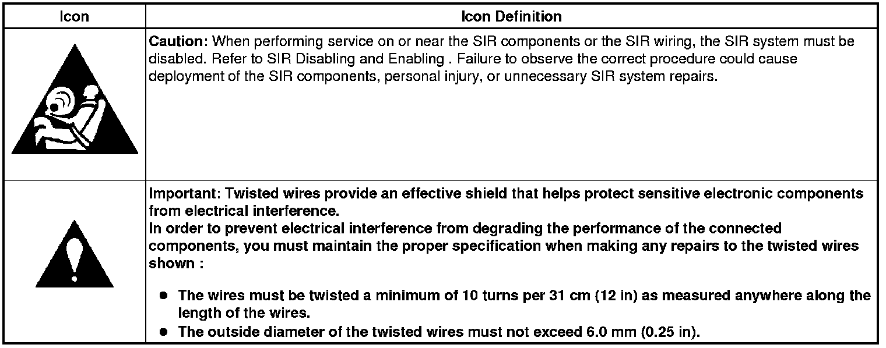

Operation CHARM
: Car repair manuals for everyone.
Home
>>
Cadillac
>>
2008
>>
SRX AWD V8-4.6L
>>
Repair and Diagnosis
>>
Sensors and Switches
>>
Sensors and Switches - Powertrain Management
>>
Sensors and Switches - Computers and Control Systems
>>
Knock Sensor
>>
Diagrams
>>
Diagram Information and Instructions
>>
Master Electrical Schematic Icons
Master Electrical Schematic Icons
Master Electrical Schematic Icons
